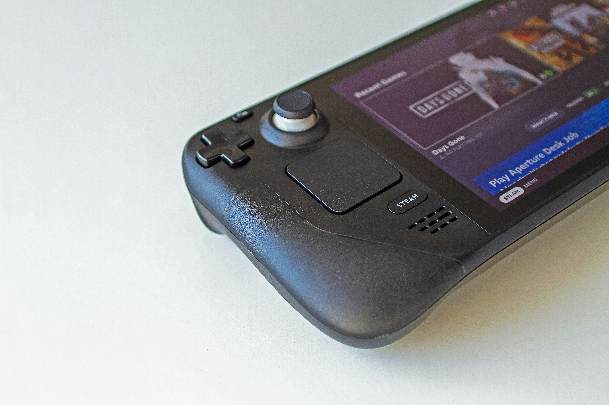

VIDEO GAMES
The Evolution and Impact of Gaming: A Modern Cultural Phenomenon
Introduction
Gaming has evolved from a niche hobby into a dominant cultural and economic force. What began as simple pixelated adventures and arcade challenges has grown into a vast, immersive industry encompassing a wide range of genres, platforms, and experiences. This article explores the evolution of gaming, its impact on society, and its future trajectory.
The Birth and Growth of Gaming
The origins of gaming can be traced back to the early 1970s with the advent of arcade games like Pong and Space Invaders. These games laid the groundwork for what would become a multi-billion-dollar industry. The 1980s saw the rise of home consoles like the Atari 2600 and the Nintendo Entertainment System (NES), making gaming more accessible to the average household.
As technology advanced, so did the complexity and scope of games. The 1990s introduced 3D graphics and more sophisticated gameplay with consoles like the Sony PlayStation and Nintendo 64. The dawn of the new millennium brought online multiplayer experiences and massively multiplayer online games (MMOs) such as *World of Warcraft*, which transformed gaming into a social activity and not just a solitary pursuit.
The Cultural and Social Impact of Gaming
The Cultural and Social Impact of Gaming Gaming has become a significant cultural force, influencing various aspects of society. Here are some key areas where gaming has made an impact:
- Entertainment and Media: Video games have grown to rival movies and music in terms of revenue and cultural influence. Titles like The Legend of Zelda and Grand Theft Auto are not just games but cultural phenomena, with dedicated fan bases and extensive media coverage.
- Social Interaction: Online gaming has revolutionized how people interact. Multiplayer games and platforms like Twitch and Discord have created new forms of socialization and communities. Gamers can now connect, collaborate, and compete with others across the globe, breaking down geographical barriers.
- Education and Training: Educational institutions and businesses have embraced gaming techniques for training and development. Gamification—using game-like elements in non-game contexts—has proven effective in engaging learners and improving outcomes in various fields, from corporate training to healthcare.
- Mental Health and Well-being: Gaming has both positive and negative impacts on mental health. On the one hand, it can offer a form of escape and stress relief. On the other, concerns about addiction and excessive screen time remain prevalent. Striking a balance and promoting healthy gaming habits is crucial.
The Future of Gaming Looking ahead, the gaming industry is poised for further innovation and expansion. Several trends are shaping the future of gaming:
- Esports: Competitive gaming, or esports, continues to grow in popularity and legitimacy. With professional leagues, sponsorships, and large audiences, esports is becoming a major entertainment industry in its own right, comparable to traditional sports. ~
- Virtual Reality (VR) and Augmented Reality (AR): VR and AR technologies are set to transform the gaming experience by providing more immersive and interactive environments. Games like Beat Saber in VR offer a glimpse into how these technologies can enhance gameplay.
- Cloud Gaming: Services like Google Stadia and Microsoft xCloud aim to make high-quality gaming accessible on a wider range of devices by streaming games from powerful servers. This could democratize gaming, making it easier for people to play high-end games without expensive hardware.
- Artificial Intelligence (AI): AI is being used to create more sophisticated game characters and environments, leading to more dynamic and responsive gameplay. AI can also assist in personalized gaming experiences, adapting to individual player preferences and behaviors.
To read or learn more click here
TYPES OF GAMES

PlayStation

Gaming Console

Vr Headset

Nintendo